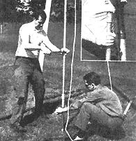

TO DRIVE PIPE, simply raise the weighted section and let it fall (left). Periodically, stop and use a weighted line to test for water level. When the desired water level has been reached clean (purge) the pipe by surging with stick and rags, or with water pressure from hose lowered to the wellpoint tip